戈尔曼将军在约克镇前的武装侦察
Reconnaissance in Force by General Gorman before Yorktown · 1862
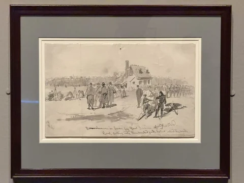
WINSLOW HOMER / OF LIGHT AND AIR
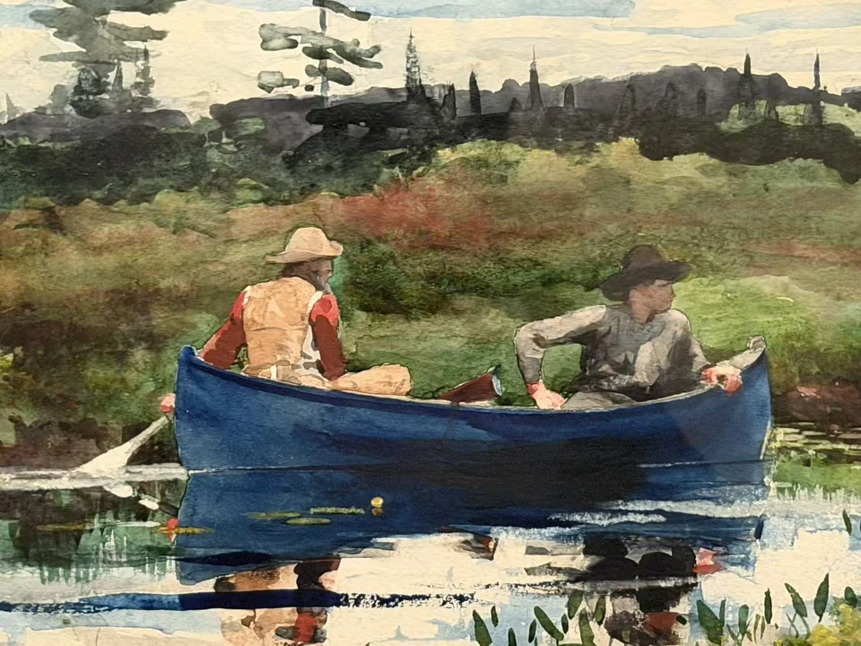
我喜欢徒步、爬山，也喜欢划船。北美的森林、湖泊与海洋，是我愿意反复走近的地方。在休斯顿美术馆看霍默的画时，最打动我的，也是那种置身自然之中的感觉。
多次走进这场展览之后，我把照片收拢在这里。从田野与海岸看起，走进山林，再回到浪边，留一个可以慢慢重看的地方。
Of Light and Air: Winslow Homer from the Museum of Fine Arts, Boston
休斯顿美术馆（MFAH） · 2026年11月1日—2027年2月7日
由波士顿美术馆（MFA Boston）组织，休斯顿展出。展览资料 [1]
有些画，总想再回去看看。这五幅，是我在这场展览里尤其喜欢的作品。
PLACES & PICTURES
从北方的森林与湖泊，到大西洋两岸，再到更南方的光。点选地图编号或地区名称，回到画里的舟、水与人。
区域示意，非精确创作地点。底图：Natural Earth。
湖区的垂钓、出口急流与向导生活。布卢角的另一幅画呈现因努社群，树皮舟也是当地生活的一部分。
 圣让湖出口的急流约1902 · Grand Discharge, Lake St. John, Province of Quebec
圣让湖出口的急流约1902 · Grand Discharge, Lake St. John, Province of Quebec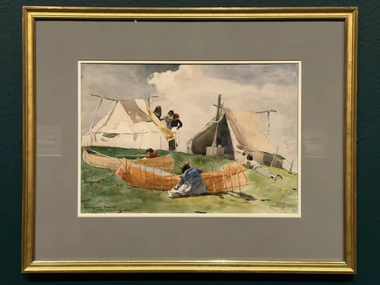
布卢角的因努人1895 · Montagnais Indians, Pointe Bleue, Quebec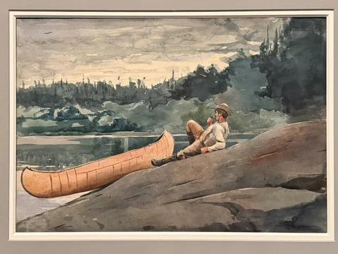
向导1895 · The Guide普劳茨岬的浪与岩石，以及邻近海岸的沙丘生活。这里的标记代表海岸区域。
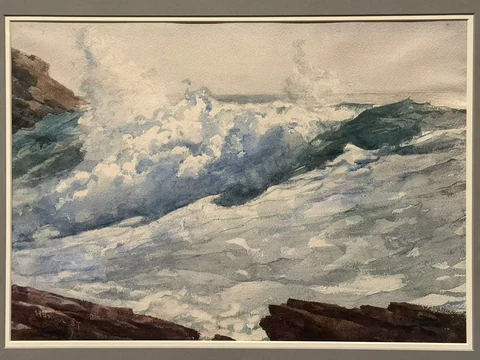
碎浪（普劳茨岬）1887 · Breaking Wave (Prouts Neck)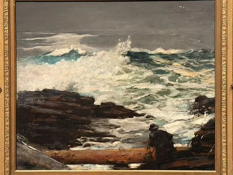
漂木1909 · Driftwood 沙丘1894 · The Dunes
沙丘1894 · The Dunes港湾、渔船与小艇。海面既是劳动场所，也出现在孩子的日常与游戏里。
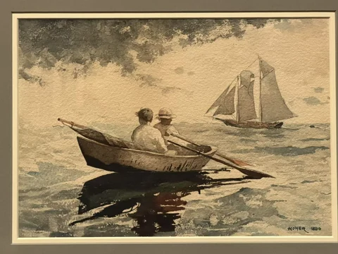
两个划船的男孩1880 · Two Boys Rowing 搁浅小艇上的三个男孩1873 · Three Boys on a Beached Dory
搁浅小艇上的三个男孩1873 · Three Boys on a Beached Dory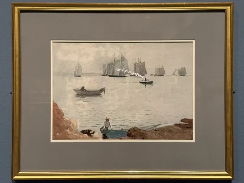
格洛斯特港1880 · Gloucester Harbor卡勒科茨、泰恩茅斯与更南面的布里德灵顿等海岸，留下渔民家庭、船帆和等待的身影。
 渔夫的家人（瞭望）1881 · Fisherman's Family (The Lookout)
渔夫的家人（瞭望）1881 · Fisherman's Family (The Lookout)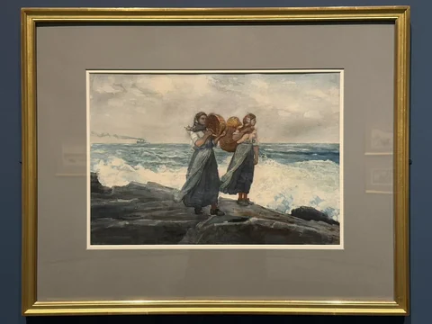
清风约1881 · A Fresh Breeze余晖1883 · An Afterglow两幅城市水彩围绕街角和海关建筑展开，暖色墙面把光与阴影分成清楚的块面。
 古巴圣地亚哥街角1885 · Street Corner, Santiago de Cuba
古巴圣地亚哥街角1885 · Street Corner, Santiago de Cuba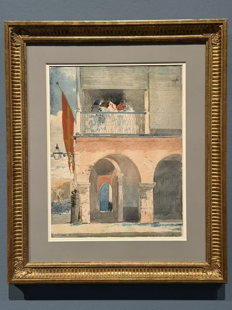
古巴圣地亚哥海关约1885 · Customs House, Santiago de Cuba从棕榈到湿地：州级标记涵盖不同地点，大沼泽地与索恩希尔沙洲并非同一处风景。
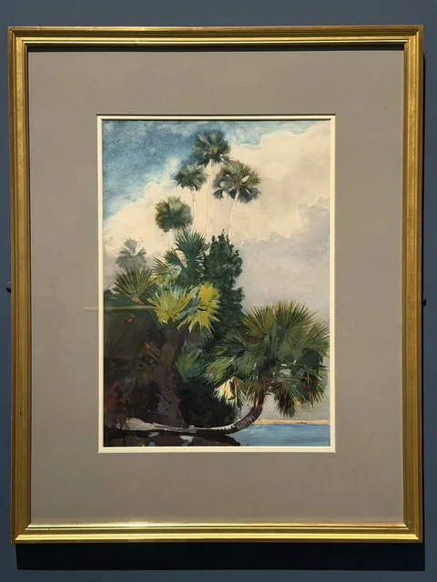
佛罗里达的棕榈树1904 · Palm Trees, Florida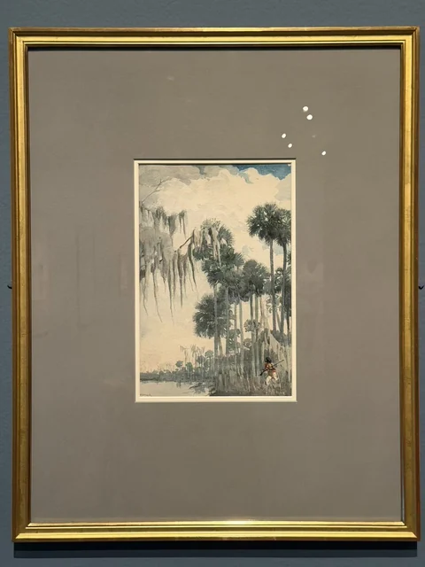
大沼泽地的猎人约1886 · Hunter in the Everglades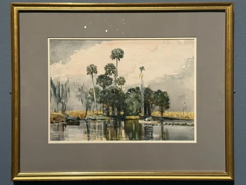
佛罗里达索恩希尔沙洲1886 · Thornhill Bar (Florida)01 / ORIGINS AND EXPERIMENTS
先从1862年的战地速写看起。线条和灰色淡洗记录营地与人物；到1873年，草坡、花朵与海湾进入水彩，颜色也渐渐铺开。
Reconnaissance in Force by General Gorman before Yorktown · 1862

Playing Old Soldier · 1863

Watching the Harbor · 1873

02 / PASTORAL YEARS
草坡上的孩子、田间的牛羊、午餐时响起的号角。霍默在1870年代反复画这些日常，也在水彩里尝试浓色、纸白与刮擦留下的亮痕。
The Dinner Horn · 约1870
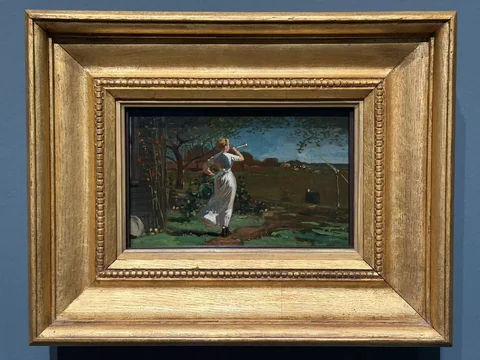
私心最爱
Boys in a Pasture · 1874
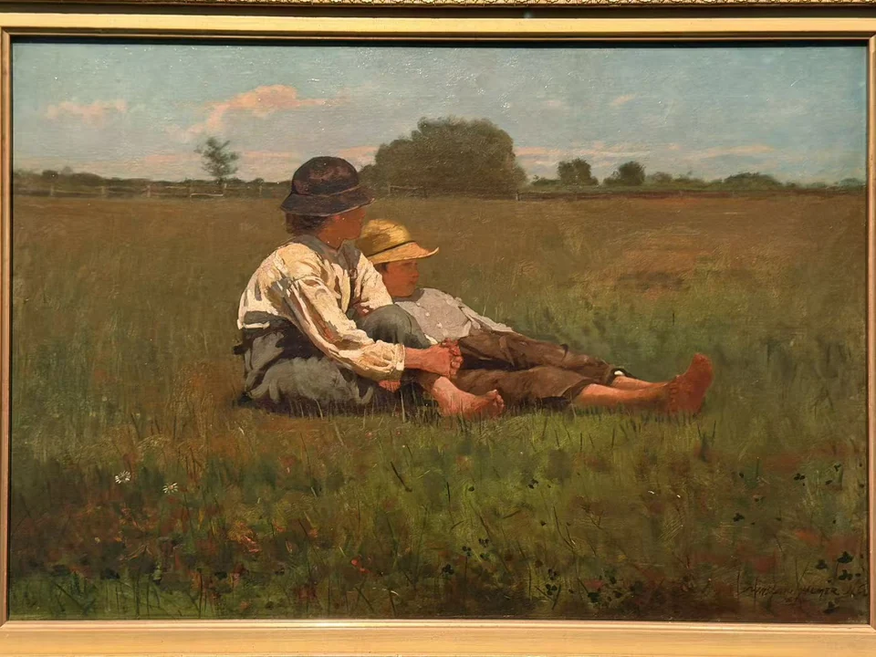
两个男孩赤脚坐卧在草地上，身子松下来，目光朝向开阔田野。没有急着去做的事，也没有占据画面的戏剧动作，只有阳光、草地与相伴的身体。我尤其喜欢这种无拘无束的户外生活感。展签认为，人物不正面面对观众，也让这段童年经验超出了个人肖像的范围。
相互参看：眺望港湾
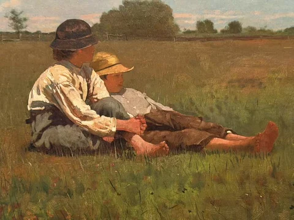
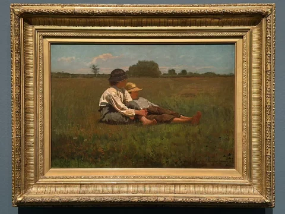
Driving Cows to Pasture · 1879

Sheep and Cattle · 1878

03 / ATLANTIC SHORES
从格洛斯特的小艇到英格兰的渔民家庭，水边有游戏，也有等待和工作。同样的风，可以鼓起帆，也可以把衣裙吹向身体的一侧。
Three Boys on a Beached Dory · 1873

Two Boys Rowing · 1880
Fisherman's Family (The Lookout) · 1881

Coast Scene, with Boats, Women, and Children (Cullercoats Beach, Tynemouth) · 1881
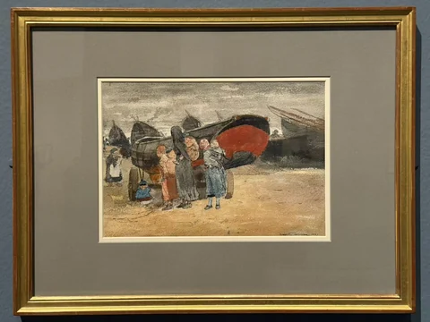
私心最爱
Girl with Red Stockings · 1882
女孩扶着篮筐，身体前倾，目光越过翻白的海面。她的身影很小，乌云与浪花却几乎占满整幅画。展签指出，远处的船正在岩石间遇险，飞溅的浪沫冲过船桅。岸上的等待因此有了重量：风浪中的危险，也落在留在岸边的人身上。这是整场展览里我最喜欢的作品之一。
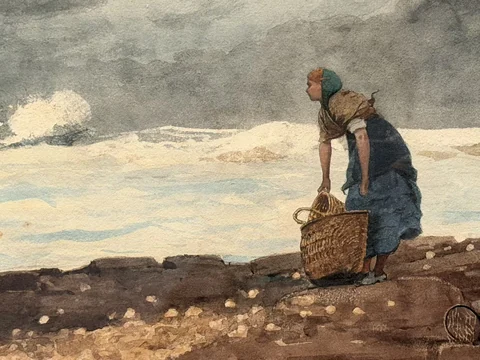
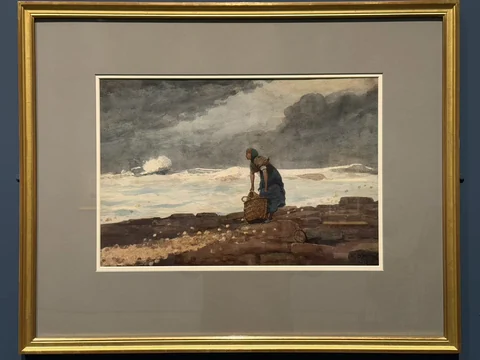
A Fresh Breeze · 约1881
Fisherwomen · 1881–82
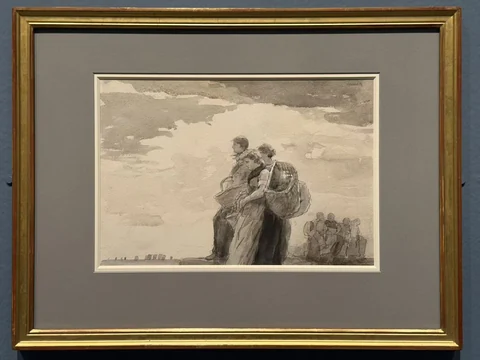
私心最爱
An Afterglow · 1883
船帆围出一小片暖光，渔船间的人物得以交谈。相比红袜女孩面前的风浪，这里的海面暂时平静，船与船之间的距离也变得亲近。温暖的水光与反复刮改的表面，一同留在这幅我尤其喜欢的画里。
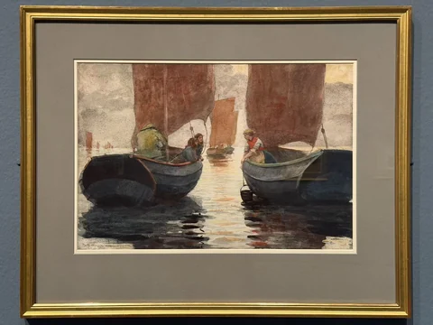
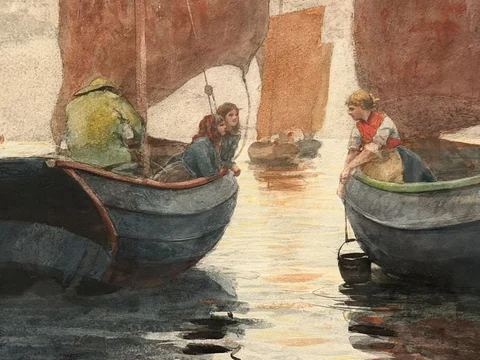
The Dunes · 1894

04 / THE NORTH WOODS
舟行在林影之间，人的身影时近时远。向导熟悉水路，树林却始终比他们更高、更深；一支桨、一段倒影，让这片自然可以走近，又无法一眼看尽。
私心最爱
The Blue Boat · 1892
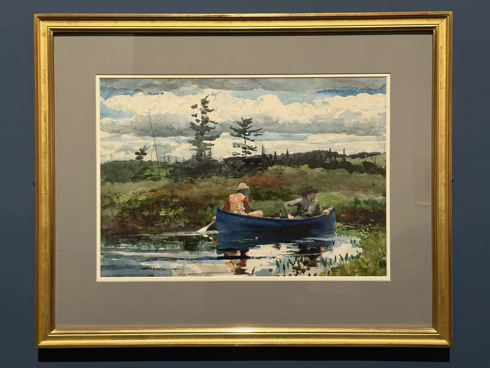
Adirondack Lake · 1889
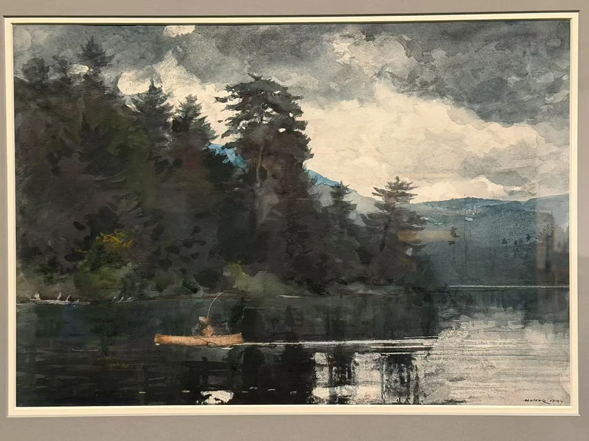
Woodsman and Fallen Tree · 1891
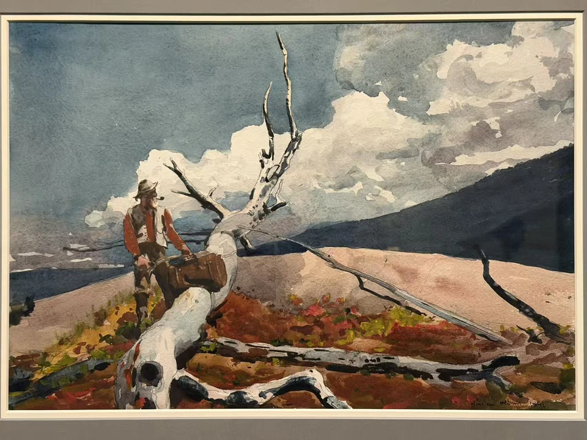
Old Settlers · 1892

Trout Fishing, Lake St. John, Quebec · 1895
The Guide · 1895
SIDE BY SIDE
《蓝色小舟》让我们靠近舟中人，浓蓝船身与反光划过前景；《阿迪朗达克湖》把舟缩小，大片树影包围它。两幅都有人在水上，距离却改变了风景的重心。
整幅现场照片；未按原作尺寸等比例排列。蓝色小舟札记 → · 阿迪朗达克湖札记 →
05 / FISH, WILDLIFE AND RIVER CURRENTS
平静的湖水会翻成急流，鱼会跃出水面，狩猎也会留下死亡。这里不只有野外活动的自由，还有人与其他生命相遇时不那么轻松的一面。
Leaping Trout · 1889
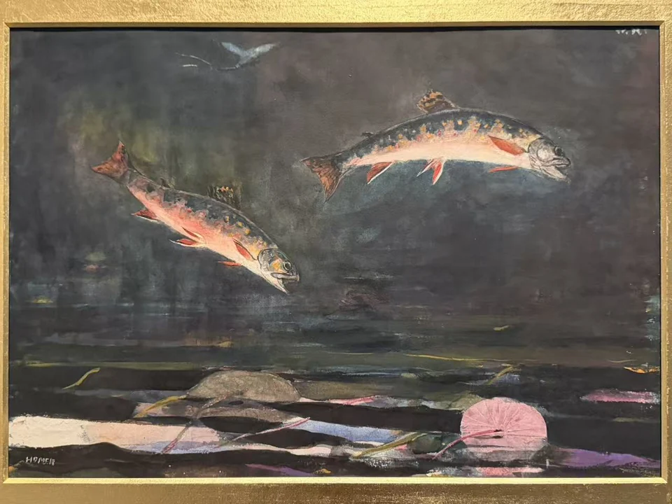
私心最爱
Ouananiche Fishing, Lake St. John, Province of Quebec · 1897

前景的陆封鲑猛然跃起，后面的舟与钓者却小了许多。细细的鱼线横过空中，把两种尺度拉在一起。1897年的这幅水彩，是我尤其喜欢的一张：鱼身、水的反光与浅色浪纹彼此交错，整个画面都牵动在跃起的一瞬间。

Fishing for Ouananiche, Lake St. John, P.Q. Canada, no. 2 · 1902

Grand Discharge, Lake St. John, Province of Quebec · 约1902
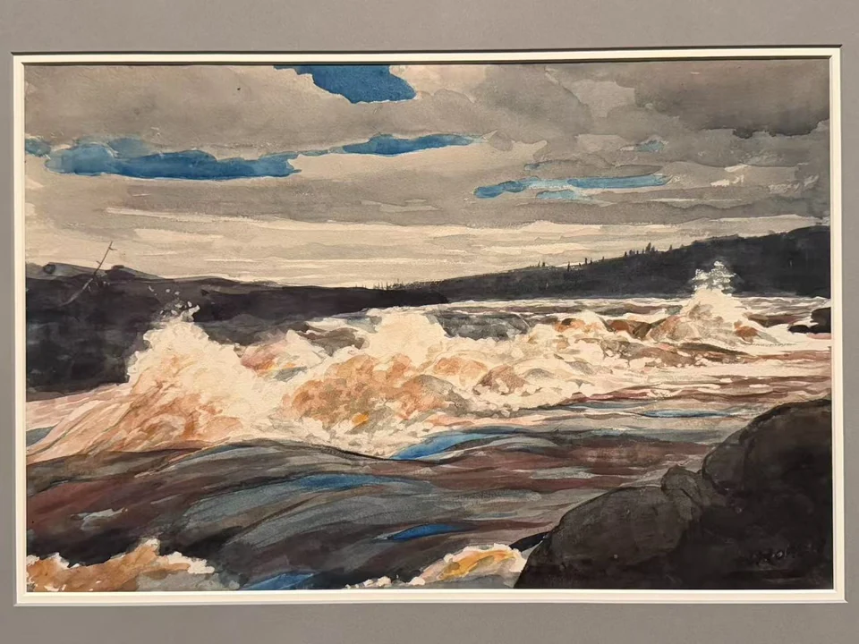
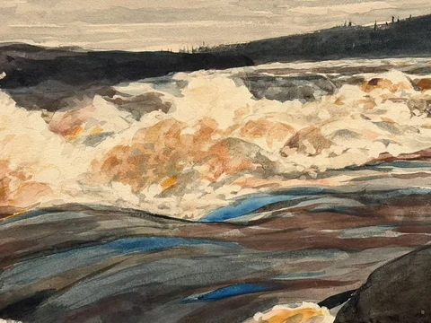
The Fallen Deer · 1892
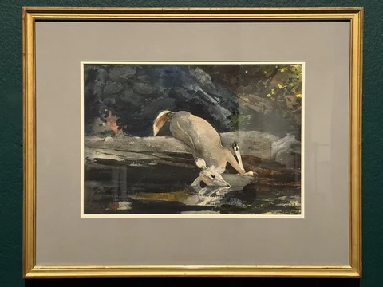
06 / FLORIDA AND THE CARIBBEAN
古巴墙上的暖光、巴哈马的白船、百慕大的浅水，再到佛罗里达的棕榈。向南看去，光改变了颜色，也照见不同地方的劳动与生活。
07 / TURN, TURN, TUMBLE
最后回到海边。把1887年的水彩与1909年的油画放在一起，浪的运动相似，人的位置却变了。画面可以停住，水势似乎仍在继续。
Breaking Wave (Prouts Neck) · 1887
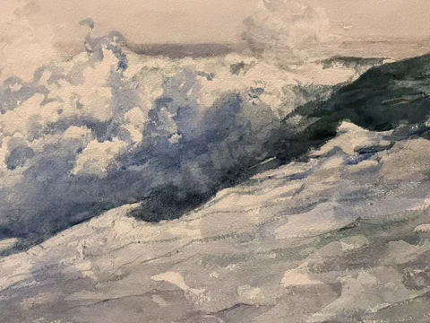
Eight Bells · 1887

Driftwood · 1909
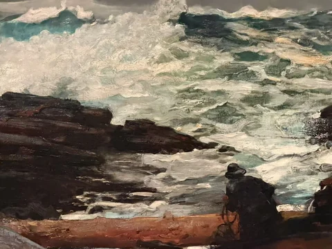
SIDE BY SIDE
水彩《碎浪》几乎把全部空间交给翻卷的海水；二十二年后的油画《漂木》，在岸边留下一个用力的人。浅色与深色如何交错，也随材料而改变。
整幅现场照片；未按原作尺寸等比例排列。碎浪（普劳茨岬）札记 → · 漂木札记 →
SIDE BY SIDE
早期的草坡堆着浓色与白花，后来的湖面近乎单色。两幅画都安排人物面向远处，纸上的光却走了不同的路。
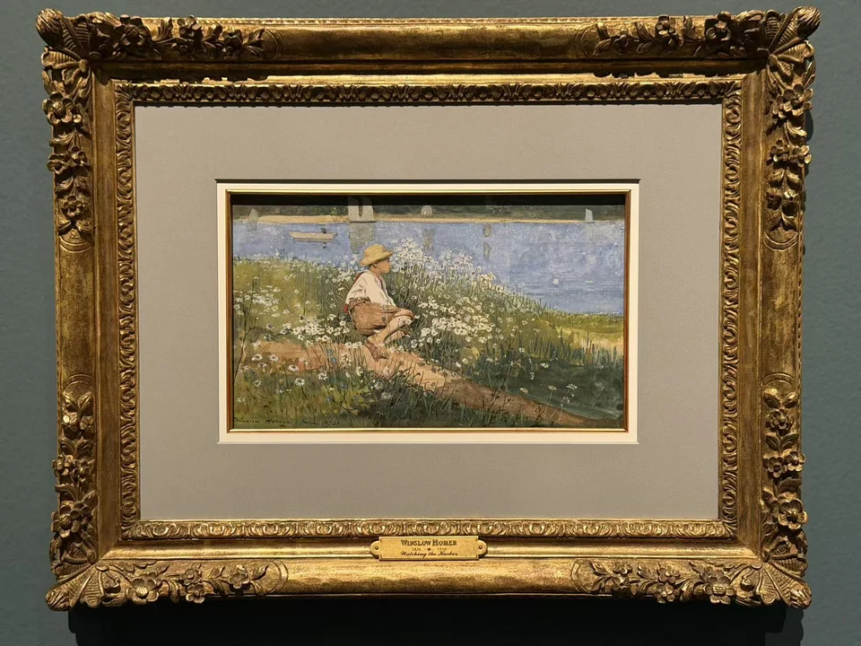
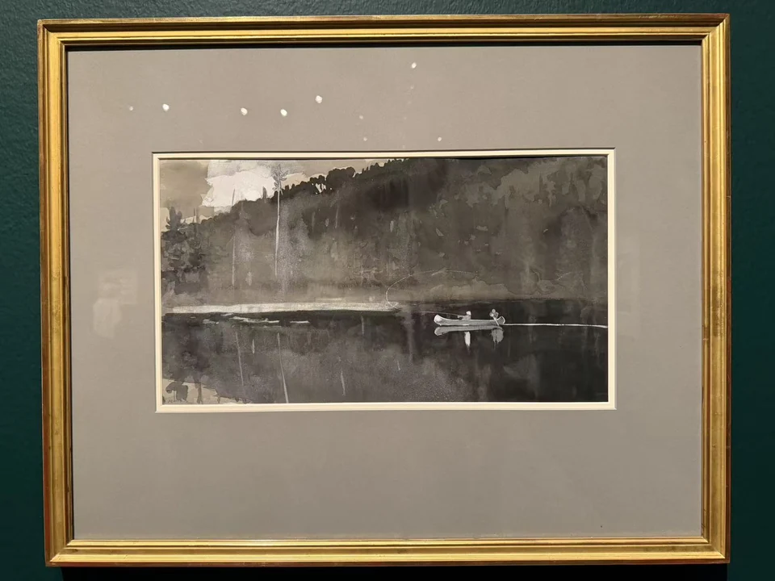
整幅现场照片；未按原作尺寸等比例排列。眺望港湾札记 → · 圣让湖钓鳟鱼札记 →
PAPER, WATER & COLOUR
同样是亮处，可以来自留下的纸白，也可以来自加上的白色、被吸走的湿颜料，或刮开后重新着色的表面。四张局部，把这些不同的做法放在一起。
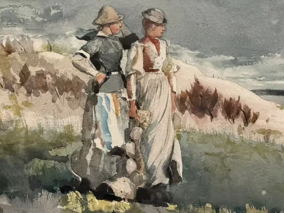
浅色衣裙迎着光，褶皱由周围的灰蓝和褐色显出。展签指出，霍默保留未着色的纸面，让裙上的亮处从颜色之间透出来。
草坡上的白花点在浓绿之间。与《沙丘》的留白不同，这些亮点据展签使用了不透明白色；白也可以覆盖在已有颜色之上。
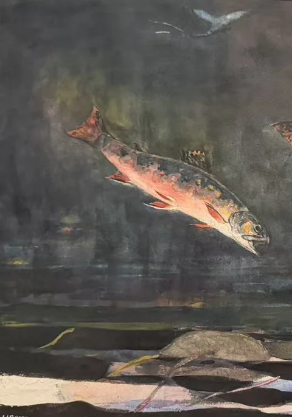
上方蜉蝣像淡影悬在水前，左下亮痕却粗糙而分明。展签把前者解释为吸除湿颜料，后者则以锐器刮去色层，露出纸面。
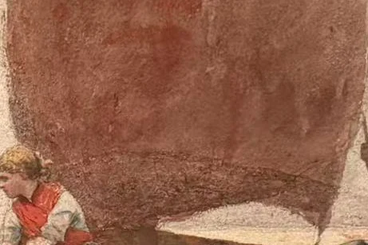
右侧船帆下部的红褐色更粗涩。展签说明，这里先刮除颜料，再重新着色；纸面改变后，颜色沉积的方式也随之不同。
便携水彩盒与色样补上了材料环境；盒子是同时代用品，并非已确认的霍默自用物。
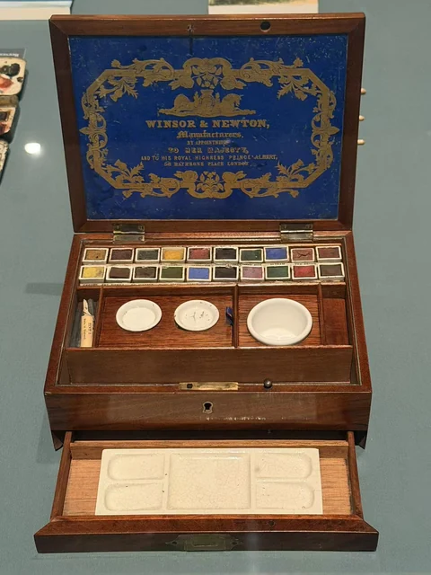
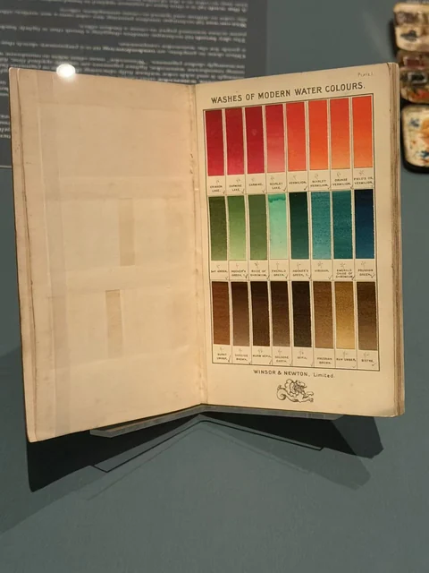
绘画、版画与素描一起留在这里。同框的两件作品按一组记录；展签、局部与重复照片不另算作品。
67条记录
 跃起的鳟鱼1889 · Leaping Trout
跃起的鳟鱼1889 · Leaping Trout1889 · 石墨底稿上施水彩
波士顿美术馆
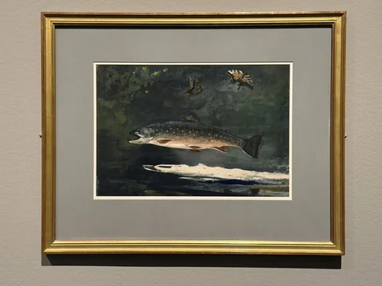
破水而出的鳟鱼1889 · Trout Breaking1889 · 石墨底稿上施水彩
波士顿美术馆
渔夫的家人（瞭望）1881 · Fisherman's Family (The Lookout)1881 · 石墨底稿上施水彩
波士顿美术馆
沙丘1894 · The Dunes1894 · 石墨底稿上施水彩
波士顿美术馆
1892 · 石墨底稿上施水彩
波士顿美术馆
 装病的士兵1863 · Playing Old Soldier
装病的士兵1863 · Playing Old Soldier1863 · 布面油画，裱于硬质纤维板
波士顿美术馆
 八响钟1887 · Eight Bells
八响钟1887 · Eight Bells1887 · 蚀刻版画
休斯顿美术馆
 林中人与倒木1891 · Woodsman and Fallen Tree
林中人与倒木1891 · Woodsman and Fallen Tree1891 · 石墨底稿上施水彩
波士顿美术馆
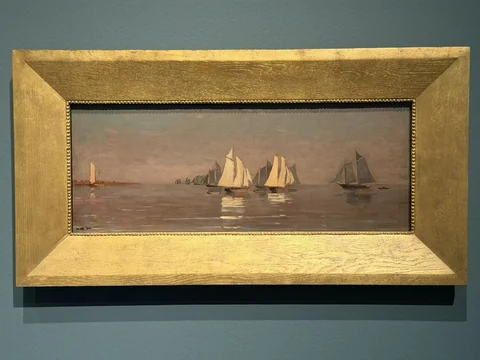
晨曦中的格洛斯特鲭鱼船队1884 · Gloucester Mackerel Fleet at Dawn1884 · 木板油画
波士顿美术馆
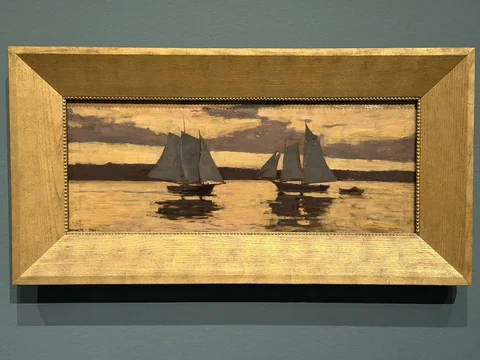
夕阳下的格洛斯特鲭鱼船队1884 · Gloucester Mackerel Fleet at Sunset1884 · 木板油画
波士顿美术馆
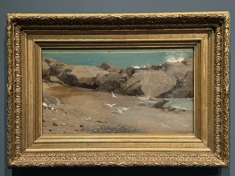
岩岸与海鸥1869 · Rocky Coast and Gulls1869 · 布面油画
波士顿美术馆
约1870 · 木板油画
波士顿美术馆
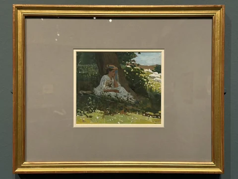
牧羊杖旁的女孩1878 · Bo Peep (Girl with Shepherd's Crook Seated by a Tree)1878 · 石墨底稿上施水彩
波士顿美术馆
约1877 · 炭笔底稿上施水彩
波士顿美术馆
约1878 · 布面油画
Tina与Joe Pyne收藏
 赶牛去牧场1879 · Driving Cows to Pasture
赶牛去牧场1879 · Driving Cows to Pasture1879 · 石墨底稿上施水彩
波士顿美术馆
约1878 · 石墨底稿上施水彩
波士顿美术馆
1876 · 布面油画，裱于纤维板
波士顿美术馆
 羊与牛1878 · Sheep and Cattle
羊与牛1878 · Sheep and Cattle1878 · 水粉与水彩
Sarofim Foundation收藏
1878 · 石墨底稿上施水彩
波士顿美术馆
1875 · 石墨、白色水彩
波士顿美术馆
 眺望港湾1873 · Watching the Harbor
眺望港湾1873 · Watching the Harbor1873 · 水彩
私人收藏
搁浅小艇上的三个男孩1873 · Three Boys on a Beached Dory1873 · 黑色蜡笔、白色水彩
波士顿美术馆
1874 · 布面油画
波士顿美术馆
 圣让湖钓陆封鲑（第二号）1902 · Fishing for Ouananiche, Lake St. John, P.Q. Canada, no. 2
圣让湖钓陆封鲑（第二号）1902 · Fishing for Ouananiche, Lake St. John, P.Q. Canada, no. 21902 · 石墨底稿上施水彩
波士顿美术馆
 老住民1892 · Old Settlers
老住民1892 · Old Settlers1892 · 石墨底稿上施水彩
波士顿美术馆
1897 · 石墨底稿上施水彩
波士顿美术馆
圣让湖出口的急流约1902 · Grand Discharge, Lake St. John, Province of Quebec约1902 · 石墨底稿上施水彩
波士顿美术馆
1892 · 石墨底稿上施水彩
波士顿美术馆
 阿迪朗达克湖1889 · Adirondack Lake
阿迪朗达克湖1889 · Adirondack Lake1889 · 石墨底稿上施水彩
波士顿美术馆
1895 · 石墨底稿上施水彩
波士顿美术馆
1895 · 石墨底稿上施水彩
波士顿美术馆
1895 · 水彩、石墨
休斯顿美术馆
1889 · 石墨底稿上施水彩
波士顿美术馆
1909 · 布面油画
波士顿美术馆
1887 · 水彩，留有石墨痕迹
波士顿美术馆
1883 · 石墨底稿上施水彩
波士顿美术馆
古巴圣地亚哥街角1885 · Street Corner, Santiago de Cuba1885 · 石墨底稿上施水彩
波士顿美术馆
1888 · 羊皮纸上蚀刻版画
波士顿美术馆
1862–63 · 黑白粉笔
波士顿美术馆
1862 · 石墨、淡彩
波士顿美术馆
1862 · 石墨、淡彩
波士顿美术馆
约1864 / 1868 · 石墨与白色粉笔／木口木刻
波士顿美术馆
温斯洛·霍默（素描）；John Parker Davis据霍默原作制版（版画）
1869 · 木口木刻
波士顿美术馆
佚名制版者，据温斯洛·霍默原作（after Winslow Homer）
1869 · 石墨
波士顿美术馆
1849–50 · 石墨
波士顿美术馆
1870 · 木口木刻
波士顿美术馆
佚名制版者，据温斯洛·霍默原作（after Winslow Homer）
1880 · 石墨与蓝色复写纸转印底稿上施水彩
波士顿美术馆
1880 · 石墨底稿上施水彩
波士顿美术馆
1880 · 石墨底稿上施水彩
波士顿美术馆
1880 · 石墨底稿上施水彩
波士顿美术馆
1887 · 石墨底稿上施水彩
波士顿美术馆
1881 · 石墨底稿上施水彩
波士顿美术馆
约1881 · 石墨底稿上施水彩
波士顿美术馆
1882 · 石墨底稿上施水彩
波士顿美术馆
1882–83 · 石墨底稿上施水彩
波士顿美术馆
1881–82 · 石墨底稿上施炭笔淡洗、白色粉笔及少量红色粉笔
波士顿美术馆
 巴哈马福克斯山1885 · Fox Hill, Bahamas
巴哈马福克斯山1885 · Fox Hill, Bahamas1885 · 石墨底稿上施水彩
波士顿美术馆
约1886 · 石墨底稿上施水彩
波士顿美术馆
 百慕大岩岸1900 · Rocky Shore, Bermuda
百慕大岩岸1900 · Rocky Shore, Bermuda1900 · 石墨底稿上施水彩
波士顿美术馆
1904 · 石墨底稿上施水彩
波士顿美术馆
1886 · 石墨底稿上施水彩
波士顿美术馆
 采海绵的潜水者1898–99 · The Sponge Diver
采海绵的潜水者1898–99 · The Sponge Diver1898–99 · 石墨底稿上施水彩
波士顿美术馆
1887 · 石墨底稿上施水彩
波士顿美术馆
1883 · 石墨底稿上施水彩
波士顿美术馆
1883 · 石墨底稿上施水彩
波士顿美术馆
约1885 · 水彩
私人收藏
没有符合条件的记录。试试其他关键词，或清除筛选。
作品与现场摄影由作者拍摄记录；作品信息据现场展签及馆方说明整理。画面细读与个人感受是这份札记的阅读，文中“展签指出”等表述另标明依据。
中文题名作阅读译名，英文题名保留展签写法。展览由波士顿美术馆组织，休斯顿展场还包括本馆与私人收藏借展；各件收藏归属分别列在图注与作品页。
2026年11月整理 · 215张现场照片归为67条作品／成组记录，正文选取35件。本站未使用馆方作品图片或图录复制图。